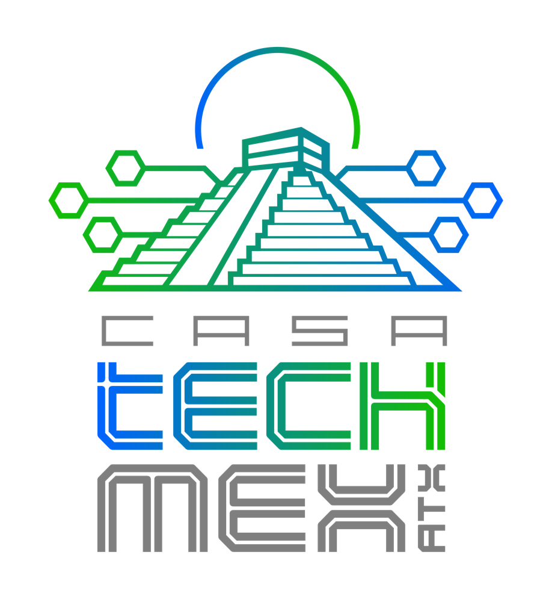

Every element of techmexaustin.org, live and copy-ready. Take css/techmex.css and js/techmex.js (plus the logos in images/) to any HTML platform, then copy any component's markup below (View code) and it works as-is. No frameworks, no build step. The styleguide.* files are this page's chrome only.
index.html · css/techmex.css (portable system) · css/styleguide.css (page chrome) · js/techmex.js (counters + countdown) · js/styleguide.js (snippet viewer) · images/ (logo files). Hexagons additionally need the hidden <svg><defs> block (top of this page's <body>) once per page.Three official lockups, all built from the same gradient wordmark (green → cyan → blue, the brand's signature direction) with the circuit-node hex mark. Always the original SVG files — never rebuilt in HTML text, never recolored, outlined, shadowed, rotated, or stretched. Dark backgrounds only.
.tmx-logo, --sm --lg --hero). Clear space around the logo ≥ 50% of the hex mark's height. Place only on --tmx-dark or photography darkened to ≥ 50%. Never: light backgrounds, recoloring, single-color fills, drop shadows, containers with rounded corners.| File | Format · ratio | Use for | |
|---|---|---|---|
techmex-logo-header.svg | SVG · 6.2 : 1 | Heroes, page headers, print | Download |
techmex-logo-condensed.svg | SVG · 3.4 : 1 | Navbars, footers, badges | Download |
techmex-logo-vertical.svg | SVG · 1 : 1 | Avatars, social, favicons | Download |
techmex-logo-email.png | PNG · 1600×260 · transparent | Email, no-SVG platforms | Download |
A distinct lockup for Casa TechMex, the annual festival brand (not the TechMex Austin organization mark above). Pyramid-and-hexagon icon in the same green→cyan→blue gradient direction, stacked over a circuit-styled “CASA TECH MEX” wordmark in Silver + the brand gradient. This is the exact file used as the hero lockup in the Save-the-Date video and the event microsite. Same usage rules as the org logo: dark backgrounds only, never recolored or stretched.

Blue → cyan → green, derived directly from the logo's own gradient — technological and dimensional, on a near-black canvas. Dark is the canvas (~62%), color is accent (≤8%). All tokens are CSS custom properties on :root — see css/techmex.css.
--tmx-logo-green) is promoted to Primary Green. Cyan (#00C8C8) and Teal (#00BFAE) are now two DISTINCT tokens, not one — Cyan is the bridge color in the brand gradient, Teal is a separate connection/transition accent. Dark and Surface both darken slightly (#080A0A / #161A1B) for more contrast headroom. A new Electric Green accent (#18B600) covers the rare case that still wants a bright, saturated flash — hover glows, success states — used sparingly, never as a fill. Variable NAMES are unchanged except for the new --tmx-teal, so any page already built on v1.1 tokens picks up this palette automatically.Core 8 — exact match to the approved reference palette:
Extended tokens (decorative / accessibility — not part of the core 8, kept from v1.1):
rgba(255,255,255,0.6) (7.3:1). #0063FF and #4068B1 fail at normal size — use them for large/bold text and icons only; small blue links use --tmx-blue-a11y.Three families, never more. Load them once from Google Fonts (link in this page's <head>); the tokens --tmx-font-sans / -disp / -mono carry the fallback stacks.
--tmx-font-sans · weights 400 / 500 / 600 / 700 / 800 / 900The workhorse. Headlines at 800–900 with tight tracking (−0.02 to −0.03em); body text at 400–500.
--tmx-font-disp · weights 500 / 600 / 700The signal. Navigation, buttons, subheads (.tmx-h3) — the angular tech voice of the brand.
--tmx-font-mono · weights 400 / 500 / 700The label. Kickers, dates, counters, metadata — always uppercase with wide tracking (0.15–0.22em).
Every heading level and text size in the system. Sizes are fluid (clamp()): the range below is mobile → desktop.
.tmx-display · Inter 900 · 40→72px / 0.95Casa TechMex.tmx-h1 · Inter 800 · 30→48px / 1.1Mexican Innovation.tmx-h2 · Inter 700 · 26→36px / 1.15What is Casa TechMex?.tmx-h3 · Sp. Grotesk 700 · 18→24px / 1.3Our Community.tmx-body · Inter 400 · 16px / 1.6Mexican innovation doesn't start or end in software..tmx-small · Inter 400 · 13px / 1.6Secondary text in cards and footers..tmx-kicker · Mono 500 · 13px · capsWhy here, why now.tmx-grad-text · headline modifierAustin's Tech Ecosystemfont-variant-numeric: tabular-nums.A floating accent bar above the button quotes the wordmark's double line; on hover it fills with the gradient, left to right. Square corners always. Hover them:
The brand's modular unit, inherited from the logo's circuit nodes. 300×346 point-up geometry, subtle border at rest; on hover a gradient light travels the border (1.5s) while corner nodes light in sequence. Sizes: --sm --md --lg --xl. The hexagon grows to fit the text — never shrink the text. Hover it:
Bridge Mexican tech talent and Austin's innovation ecosystem.
Gradient number counts up when it enters the viewport (data-count + js/techmex.js).
Alternate row counts (3-2-3, 2-3-2, 4-3…); rows nest with a negative top margin and center themselves. Match --hex-overlap to the hex size (modifiers --md --lg --xl; sm is the default) and keep the widest row inside your container (3 × md ≈ 950px).
Small flat hex cells with mono tabular digits — live countdown to Casa TechMex 2026 (Oct 29, 2026 · js/techmex.js).
Square corners, 10% white border, colored top accent, #161616–#202020 surfaces. Uniform height per row; hover shifts the border to green. Glass and animated-gradient-border variants for special moments.
Standard card: white/10 border, green top accent, hover border to green/40.
60% gray + 12px backdrop blur. Use over imagery or gradients.
Conic gradient rotating via @property. Reserve for one hero element.
The supporting cast: L-shaped circuit corners with a node at the vertex (green top-left, blue bottom-right), stepped section dividers that quote the pyramid, and the fractal-noise grain already applied to this page's background via body::before. Zero rounded corners anywhere — the only curve is the node circle.
Frame with circuit corners
Stepped divider — section transitions, never waves
Square inputs on 5% white with 10% border; focus ring in Logo Green. The submit button is the standard double-line button. On the live site this posts to /api/newsletter (Brevo).
{kind=link}
{kind=link}
{kind=link}
{kind=link}